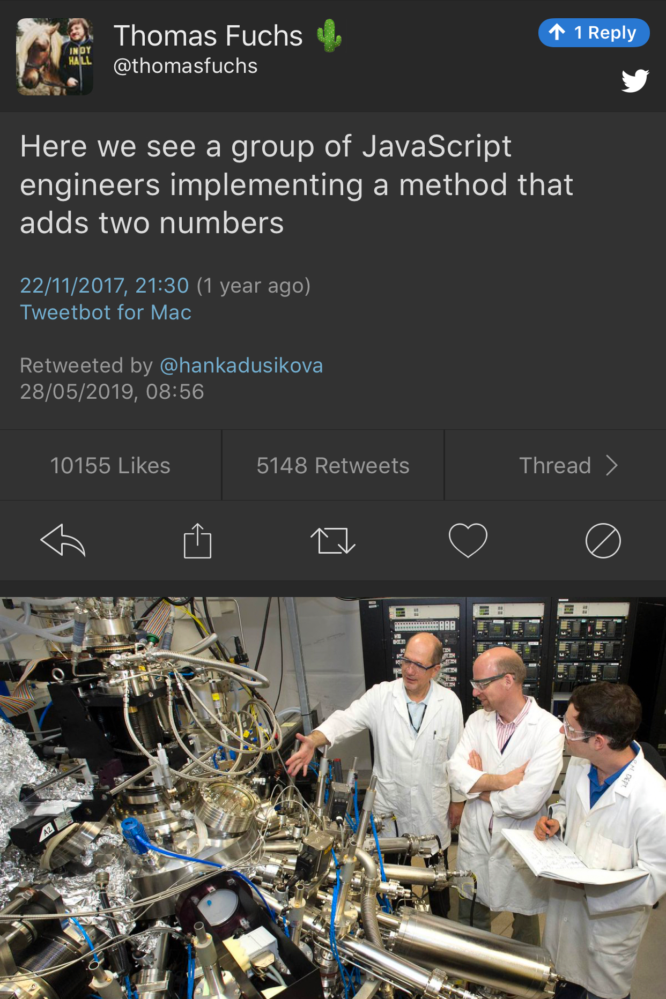

2019-05-30
https://www.reddit.com/r/cpp/comments/blu0a4/what_was_your_latest_discovery_about_c/
void fn() {
https://www.google.com
cout << "Everything is fine.\n"
}template to disambiguate dependent names: Reddit | CppReference | SOtry/catch: Redditdelete this: Reddit+[]{}
For every type
Tthe unaryoperator+(T*)is considered to exist which returns the given pointer as is. Here,Tis not restricted to object types but includes function types. A lambda object that didn't capture anything has a conversion operator to a function pointer. The unary+triggers this conversion.
noexcept to destructors (but only if there are no data members or base classes that have a throwing destructor): Reddithttp://timur.audio/initialisation-in-c17-the-matrix
https://www.reddit.com/r/cpp/comments/a2qzsv/c_weekly_ep_144_pure_functions_in_c/
int square(int value) __attribute__((pure));
[[gnu::pure]] int square2(int value);
[[gnu::const]] int square3(int value);https://www.reddit.com/r/cpp/comments/a3gp0s/best_logging_libraries/
https://thephd.github.io/sol3-released
https://sol2.readthedocs.io/en/latest/
https://www.reddit.com/r/cpp/comments/bs0piq/sol3_a_modern_luac_binding_is_released/
https://blogs.msdn.microsoft.com/ericlippert/2008/09/10/vexing-exceptions/
TL;DR: You can emulate OCaml polymorphic sum type error handling in C++17.
class AST;
struct SyntaxError {int line; int column;};
struct GrammarError {int line; int column; std::string explanation;};
auto parse(std::string input) -> Result<AST, SyntaxError, GrammarError>;
struct LengthError {int length;};
struct HeightError {int height;};
auto validate(AST ast) -> Result<AST, LengthError, HeightError>;
struct DisplayError {std::string explanation;};
auto display(AST ast) -> void;auto result = parse(my_input)
.then(validate)
.then(display);
Switch(result)
.Case<SyntaxError>([](auto err){
report_error("Invalid syntax at line", e.line, ":", e.column);})
.Case<GrammarError>([](auto err){
report_error(e.explanation, "at ", e.line, ":", e.column);})
.Case<LengthError>([](auto err){
report_errror("illegal length: ", e.length);})
.Case<DisplayError>([](auto err){
report_error(e.explanation);})
| ESAC;
// Triggers static_assert as HeightError is unhandledhttps://github.com/nholthaus/units
http://thiagocafe.com/view/20170910_Having_fun_in_life

Elizabeth Zwicky:
The only thing more frightening than a programmer with a screwdriver or a hardware engineer with a program is a user with a pair of wire cutters and the root password.